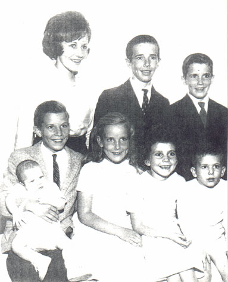

Alicia MacCollum
19?? - ?
Alicia Brown was born to Dick and Helen Brown. She was one of 9 children. She married Tim MacCollum and together they had at least three children.

top row: Kathee, Peter, David
bottom row: Danny (holding Phillip), Christine, Alicia, Chuckie
Parents:
Robert Richard Brown
1925 - 1972
Helen Morris ???? - ?
Offspring:
Missy MacCollum
Tim MacCollum
Elaina MacCollum
References:
1. Virginia Craig
Last Modified: 12 May 2004 by
Brad Wogsland
.